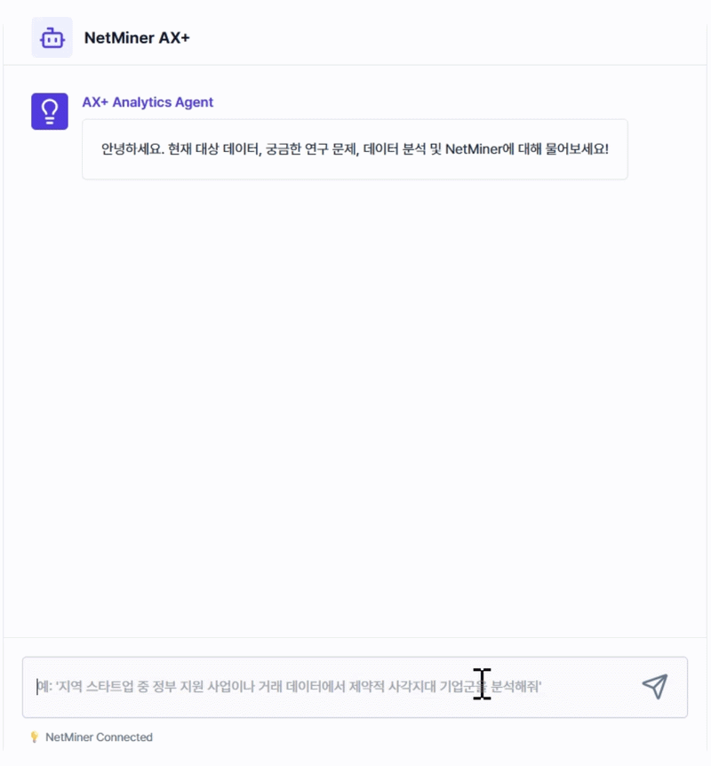
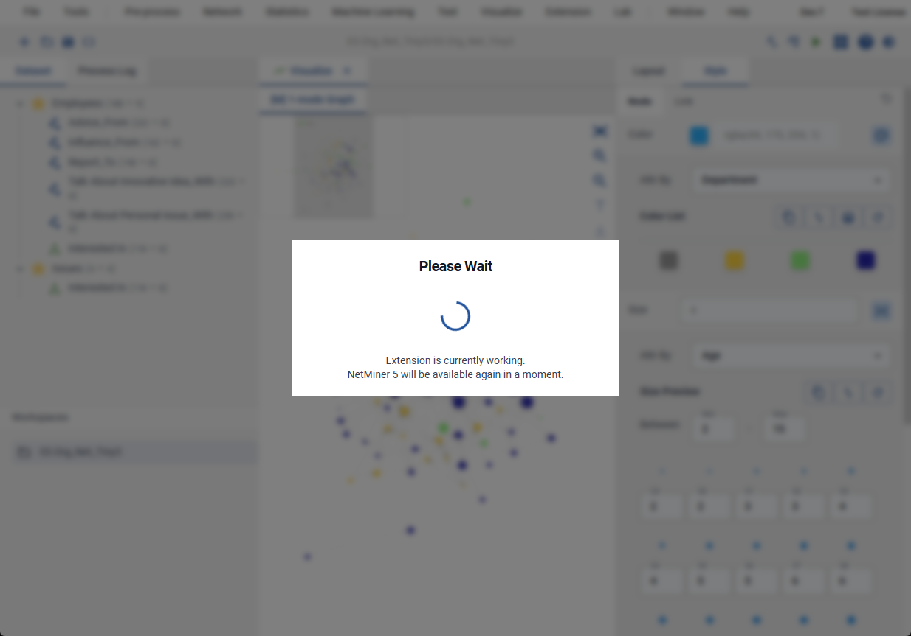

Graph AI
도입 기관의 데이터를 기관 맞춤형 지식그래프로 구축하고, 질문 해결에 필요한 네트워크 분석을 설계·실행·해석하는
대화형 Graph AI 분석 전문가입니다.
Background
AI한테 분석 목적과 데이터 맥락을 설명해놔도, 일반적인 분석 방법과 워크플로우만 제안해줄 때가 많았어요.
AI로 분석을 해보려고 했는데, 왜 그런 결과가 나왔는지 알 수가 없고, 같은 질문인데 결과가 다르게 나오거나 있지도 않은 기능을 추천할 때도 있었어요.
NetMiner 등 분석 툴을 사용하려면 사용법을 배워야 했고, 능숙한 경우에도 반복되는 분석 과정은 매번 번거로운 작업이었어요.
Product
도입 기관의 데이터와 업무 방식에 맞춰, 우리 조직에 꼭 맞는 분석 전문가가 됩니다.
복잡한 분석 방법은 몰라도 됩니다. 해결하려는 문제만 있으면 충분합니다.

※ 이해를 돕기 위한 예시 화면으로, 실제 출시 버전과 다를 수 있습니다.
Example
NetMiner AX+는 이렇게 실행됩니다.
Question
"반도체 관련하여, 정책 지원이 필요한 유망 기술은 무엇인가?"
AI가 질문의 의도('유망 기술 발굴')를 분석하고, 그에 맞는 분석 워크플로우 및 관련 지식그래프를 탐색하여, 실행 프로세스를 설계합니다.
설계에 따라 필요한 NetMiner 기능을 탐색하여 자동으로 실행합니다. 분석 옵션, 분석 결과는 세션 로그로 자동 저장합니다.

분석 결과를 업무 맥락에 맞게 종합 해석해, 근거와 함께 요약 리포트로 제공합니다.
반도체 관련 기술 중 '칩렛(Chiplet) 패키징' 분야의 중심성이 최근 3년간 크게 상승해, 정책 지원이 필요한 유망 기술로 확인됩니다.
"OO 분야에서 최근 급부상하는 관심사는 무엇인가?"
"논문·특허·연구보고서 기준으로, 이 분야의 국내외 기술 격차는 어느 정도인가?"
"어떤 분야와 결합하면 새로운 연구 주제가 열리는가?"
"이 정책 이슈의 핵심 이해관계자는 누구인가?"
"이 이슈는 어떤 경로로, 누구를 통해 확산되었는가?"
"OO 기관과 공동 과제를 수행한 기관 중, 특허를 가장 많이 보유한 곳은 어디인가?"
Key Features
Graph와 AI가 결합되어, 질문 의도를 정확히 이해하고 분석을 직접 실행하여 근거 있는 결과를 제시하며 데이터 맥락에 맞게 해석합니다.
기관 맞춤형 지식그래프를 기반으로 질문 의도를 파악하고, 이에 맞는 분석 방법을 정확하게 선택합니다.
범용 AI: 일반적인 개념 설명 위주, 실제 워크플로우 설계는 사용자 몫
NetMiner로 분석을 수행하면서 옵션과 결과를 그대로 보존해, 그럴듯한 답변이 아닌 실행 경로·출처에 근거한 답변을 제공합니다.
범용 AI: 재현이 어렵고 수치를 지어내는 환각 리스크 존재
설계된 흐름에 따라 NetMiner 분석과 시각화를 자동으로 실행하고, 정리된 결과를 바로 확인할 수 있습니다.
범용 AI: 분석 도구 제어 불가, 코드 실행·오류 수정은 사용자 직접
Proposal
정해진 범위와 기간 안에서 진행되는 소규모 유상 프로젝트로, 정식 도입에 앞서 연구자·기관의 연구 질문과 데이터에 대한 적용 가능성을 확인합니다.
진행 단계
도입 기관의 정형·비정형 데이터에서 핵심 개념과 용어를 추출하고, 관계 구조를 설계합니다.
예시 특허·논문 원문(비정형) + 특허·논문 메타데이터(정형: 국가과제번호, 예산 등) → "발명자–특허–연관 국가과제번호–예산–기술분류" 관계 스키마 도출
정의된 스키마를 바탕으로 실제 데이터를 구조화합니다.
예시 "김OO 연구원 – 특허 10-2023-XXXXXX – 반도체" 관계를 지식그래프 노드·엣지로 저장
도입 기관이 제시한 대표 연구 질문을 바탕으로, 지식그래프에서 필요한 데이터를 추출·분석하는 워크플로우를 설계하고 검증합니다.
예시 "반도체 관련하여, 정책 지원이 필요한 유망 기술은 무엇인가?" 질문에 필요한 데이터 추출·분석 워크플로우 설계
분석 워크플로우에 따라 필요한 NetMiner 기능이 정상적으로 수행되는지 확인합니다.
대표 질문에 대한 응답이 실제로 유용한지 평가합니다.
주요 산출물
프로젝트가 끝난 뒤에도 1년간 NetMiner AX+를 자유롭게 사용할 수 있습니다.
프로젝트가 끝난 뒤에도, 우리 기관의 데이터에 대해 자연어로 자유롭게 묻고 답을 얻을 수 있습니다.
Graph RAG를 통해 "OO 연구원과 공동 과제를 수행한 기관은 어디인가?"처럼 여러 단계를 거쳐야 답할 수 있는 질문에도 답할 수 있습니다.
연구 질문 해결에 필요한 복잡한 분석 워크플로우를 설계·검증까지 마친 상태로 전달받아, 이후 유사한 질문에도 그대로 다시 활용할 수 있습니다.
FAQ
Q. 이 프로젝트를 위해 준비해야 하는 것은 무엇인가요?
※ 상용 LLM을 사용하므로, 공개 가능한 데이터를 우선으로 진행합니다.
Q. 비용에 포함되지 않는 것은 무엇인가요?
Q. 프로젝트 수행 범위에 포함되지 않는 것은 무엇인가요?